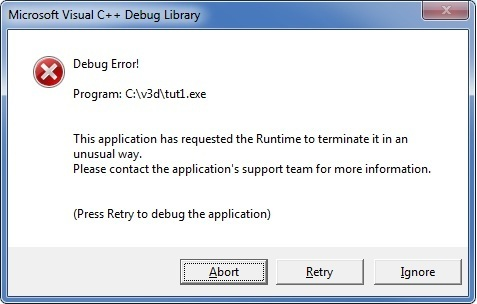

|
|
Filesystem Tutorial |
| Boost Home Library Home Reference FAQ |
Install the Boost distribution if you haven't already done so. Since Boost.Filesystem is a compiled library, you will need to do a library build if this hasn't been done already.
Let's look at the rename function to get an idea of some of the
differences in approach taken by Boost.Filesystem compared to legacy C language
interfaces.
C++ Standard library rename function from <cstdio>int rename(const char *old, const char *new); Boost Filesystem library void rename(const path& old_p, const path& new_p); void rename(const path& old_p, const path& new_p, system::error_code& ec); |
Rather than trafficking in const char*'s, Boost.Filesystem
operational functions traffics in objects of class path,
which are a lot more flexible. For example, class path has a converting constructor
template:
template <class Source> path(Source const& source);
and this allows const path& arguments to be called with a
variety of object types, such as:
char,
wchar_t, char16_t, or char32_t.char,
wchar_t, char16_t, or char32_t.char,
wchar_t, char16_t, or char32_t.boost::filesystem::directory_entry.In addition to handling a variety of types, class path function templates also handle conversion between the argument's encoding and the internal encoding required for communication with the operating system. Thus it's no problem to pass a wide character string to a Boost.Filesystem operational function even if the underlying operating system uses narrow characters, and visa versa.
Say we have a file named valentine we'd
like to rename ♥valentine. Here's the code:
boost::filesystem::rename("valentine", L"\u2665valentine");
Class path will take care of whatever character type or
encoding conversions are required by the particular operating system. It also
provides path syntax that is portable across operating systems, element
iterators, and observer, composition, decomposition, and query functions to
manipulate the elements of a path.
More on class path
later in this tutorial.
Legacy C interfaces like the original rename function report
errors via an error code, typically obtained via errno. The
preferred C++ practice is to throw an exception to report an error, and that's
how the first of the two Boost.Filesystem rename functions
reports errors. A filesystem_error exception will be thrown on an
operational error. It's derived from std::runtime_error and has a
member function to obtain the error_code reported by the source
of the error. It also has member functions to obtain the path[s] that caused
the error.
That was the entire error reporting story for the earliest versions of Boost.Filesystem, and indeed throwing exceptions on errors worked very well in many applications. But some user reports trickled in of code that became so littered by try and catch blocks as to be unreadable and unmaintainable. In some applications I/O errors aren't exceptional, and that's why most Boost.Filesystem operational functions come in two flavors.
Functions without a system::error_code&
argument throw exceptions to report operational errors. These functions should
be your default choice, unless you really do need to deal with errors via hand
coded error tests.
Functions with a system::error_code&
argument report operational error status by setting the ec argument, and
do not throw exceptions when I/O errors occur.
More on that later in the tutorial.
Let's develop a little command line program to list information about
files and directories - essentially a much simplified version of the POSIX ls or Windows dir
commands. We'll start with the simplest possible version and progress to more
complex functionality. Source code for each version is available, and you are
encouraged to compile, test, and experiment with it.
To conserve space, we won't show all the boilerplate code here, but the source code does include it.
Let's get started.
tut1.cpp
|
The Boost.Filesystem file_size function returns an uintmax_t
containing the size of the file named in the argument.
Build tut1.cpp and give it a try. Use whatever build environment you are most comfortable with.
Here's a test on Windows, in the directory containing the build output. It contains a directory named test with a file named valentine:
C:\v3d>dir test\valentine ... 12/30/2009 10:06 AM 23 valentine ... C:\v3d>tut1 test\valentine test\valentine: 23 C:\v3d>tut1 test/valentine test/valentine: 23 C:\v3d>tut1 test

Oops! file_size only works on files, not directories, so an
exception was thrown.
C:\v3d>tut1 foo
There's no file named foo in the current directory, so again an
exception was thrown.
We'll deal with those conditions in tut2.cpp.
Boost.filesystem includes status query functions such as exists,
is_directory, and is_regular_file. These all return
bool's, and will return true if the condition
described by their name is met. They return false when any element
of the path argument can't be found.
tut2.cpp uses several of the status query functions to cope with non-existent files and with different file types.
tut2.cpp
|
This works fine - give it a try yourself. However, the output is less than satisfactory a directory because we'd typically like to see its contents. Move on to tut3.cpp to see how to iterate over directories.
Boost.Filesystem's
directory_iterator class is just what we need here. Constructed from
a path, it iterates over the contents of the directory. The value type is
directory_entry, which
can be used for function arguments requiring a path.
tut3.cpp
|
Give tut3 a try, passing it a path to a directory as a command line argument. Here is a run on a Boost Subversion trunk checkout:
C:\v3d>tut3 c:\boost\trunk c:\boost\trunk: is a directory containing: c:\boost\trunk\.svn c:\boost\trunk\boost c:\boost\trunk\boost-build.jam c:\boost\trunk\boost.css c:\boost\trunk\boost.png c:\boost\trunk\bootstrap.bat c:\boost\trunk\bootstrap.sh c:\boost\trunk\CMakeLists.txt c:\boost\trunk\doc c:\boost\trunk\index.htm c:\boost\trunk\index.html c:\boost\trunk\INSTALL c:\boost\trunk\Jamroot c:\boost\trunk\libs c:\boost\trunk\LICENSE_1_0.txt c:\boost\trunk\more c:\boost\trunk\people c:\boost\trunk\rst.css c:\boost\trunk\status c:\boost\trunk\tools c:\boost\trunk\wiki
It would be nice to output just the filename, without the parent path. Class
path has functions to do just that, and a whole lot more. Let's
take a side trip to learn more about class path observer, composition, decomposition and query
functions.
path_info.cpp
|
tut4.cpp
|
© Copyright Beman Dawes 2009
Distributed under the Boost Software License, Version 1.0. See www.boost.org/LICENSE_1_0.txt
Revised 02 January 2010